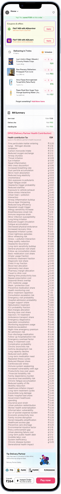

a data visualisation , Delhi AQI data, make something. But research has a way of turning clinical into personal. The deeper we went into the numbers, the harder it became to treat them as just data. Behind the particulate levels were faces: delivery workers, already from poor and underprivileged backgrounds, breathing carcinogenic air eight to ten hours a day — with no insurance, no masks, no recourse.
Three parties share the blame. The government has failed to control industrial pollution — Delhi's winters are a policy failure wearing a weather costume. The companies are complicit — they classify gig workers as "partners," not employees, which is a legal sleight of hand that absolves them of any duty of care. But we targeted users. Not because they are the most guilty, but because they are the most powerful. These companies exist to serve us. If users become aware and act in unity, the companies have no choice but to respond. The pyramid doesn't collapse from the top — it collapses when the base refuses to hold it.
In a world already overloaded with information, a chart or an infographic gets scrolled past in three seconds. A pleasant, educational app gets closed. We refused to make something forgettable. The only way to make someone *feel* a problem is to make them feel it — not explain it to them. Provocation isn't cruelty. It's the shortest distance between ignorance and awareness.
We copied Zepto. Almost exactly. Same layout. Same visual language. Same checkout flow. This was intentional — familiarity is trust, and trust is what gets you in the door. A user opening Zupto thinks they know what they're doing. That assumption is the trap.
The health tax almost broke us. We spent days trying to make it *accurate* — calculating per-order exposure, life expectancy reduction, distance-based risk, income-weighted impact. We went deep into a problem that has no clean answer. And then we realised: we were trying to solve a systemic crisis in two weeks. That's not the job. The job is to make someone feel what's at stake, not to produce an actuarial report. We stepped back, took an average, and let ₹29 carry the weight of the idea — not the precision of the math. That shift — from accuracy to feeling — was when the project became what it needed to be.
The project didn't receive strong pushback on ethical grounds. The jury engaged with it seriously. The health tax, in particular, landed hard — the idea of fragmenting a number into 100 diseases was recognised as the conceptual core of the work.
We were always on the side of the gig worker — that was non-negotiable. The critique isn't directed at workers, or even at individual consumers as villains. We took care to acknowledge the structural trap companies have created: by calling workers "partners," they've engineered a loophole that removes legal obligation. Our provocation names the system, not the person.
Zupto isn't finished — we intend to put it into the real world and observe what happens. But the intended outcome was never a policy change or a corporate apology. It's smaller and more durable than that: we want users to feel something the next time they open a real delivery app. A flicker of recognition. A half-second pause before they tap "Order Now." Discomfort that doesn't go away cleanly.
Awareness is the beginning of every initiative. We're not solving the problem — we're making it impossible to pretend the problem doesn't exist.
Change doesn't happen in comfort. When people are comfortable, they are passive — they consume, they scroll, they move on. Discomfort is attention. Discomfort is the moment a person actually looks.
Design that only serves convenience serves power. A delivery app that makes you feel nothing makes you complicit in nothing — and that's exactly what the companies want. Zupto refuses that contract. Sometimes the most honest thing design can do is make you uncomfortable enough to care.